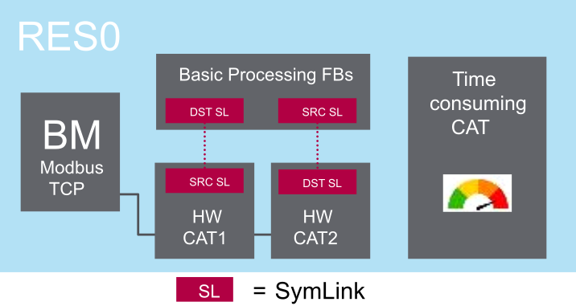
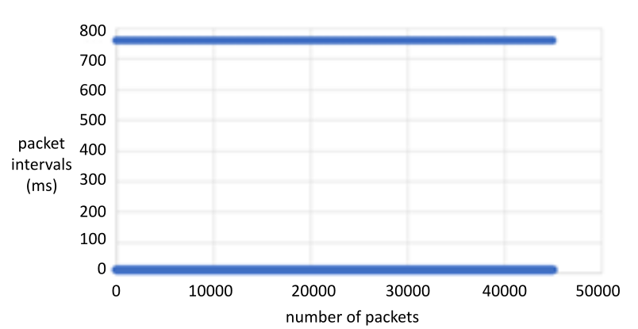
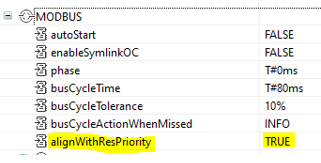
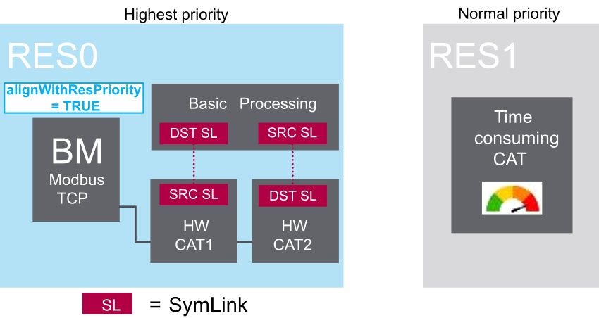
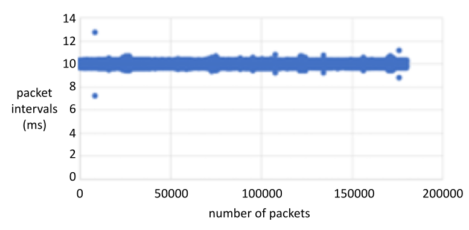

This example presents two use designs:
a single resource design, that incorporates all tasks into a single resource
a two resource design, that includes:
a high priority resource for rapidly performed basic processing operations.
a low priority resource that consumes a large amount of processing time.
One Modbus TCP bus master, with bus cycle time = 10ms
Basic I/O processing: read 1 input (through destination symlink), process the value (increment it using ADD Function Block) and write 1 output (through source symlink).
One controller-consuming task (generating a loop of internal events at 780ms to simulate an event storm), which could be image processing or statistics / mathematical computations for real customer application.

| NOTICE | |
|---|---|
Interval between sent Modbus TCP packets:
Massive jitter observed (line at 780ms, whereas target is 10ms).
The Bus Master (HW CATs) and Basic processing part are impacted by the Time consuming CAT.

The original one resource design are the same, except that:
The Modbus bus master alignWithResPriority setting is set to TRUE:

The Time consuming CAT has been moved to a separate resource.
The resource performing basic processing (RES0) is assigned the highest execution priority.
The resource containing the time consuming CAT is assigned a normal execution priority

Interval between sent Modbus TCP packets:
minimum = 7ms
maximum = 13ms (target = bus cycle = 10ms)
Jitter limited to 3ms, but <= 1ms 99.99% of the time
The Bus Master (HW CATs) and basic processing part are almost not impacted by the time consuming CAT.
